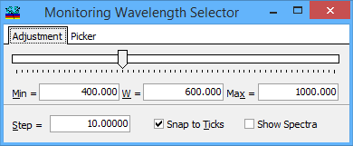
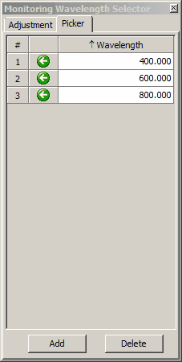

Wavelength Adjustment
Wavelength Adjustment
Navigation: OptiLayer Menu Commands > Results Menu > OptiLayer Monitor >
Wavelength Adjustment
` <fixing_wavelength_of_some_laye.html>`__ ` <idh_monitor.html>`__ ` <spectra_display.html>`__
Instead of typing the monitoring wavelength in the spreadsheet, you can change it using a convenient graphical slider. To adjust the monitoring wavelength, press the bitmap button in the upper row of controls. The Monitoring Wavelength Adjustment window will appear.

The controls in this window allow you to set the minimum and maximum limits for the monitoring wavelength in the Min= and Max= edit fields. The current value of the monitoring wavelength appears in the field labeled W=. This value changes as you move the slider in the window, and the response curves in the graph at the bottom of the OptiMonitor window are simultaneously updated to correspond to the change in monitoring wavelength. To use only a limited, rather than continuous, set of wavelengths, set the desired step in the Step= field and check the box labeled Snap to Ticks. In this case, the slider will stop only at positions characterized by the step increment displayed in the Step= field, starting with the minimum wavelength.

Note: that if a set of rows is selected in the monitoring spreadsheet, all the wavelengths in the selected area will be affected at once.
The “Show Spectra” checkbox allows you to activate the Spectra display.
Another approach to wavelength selection is the usage of the Wavelength Picker. This tool is especially useful when only a limited set of wavelengths is available.

Use the Add button to add a wavelength to the list; the Delete button will remove a selected wavelength value from the list. After adding a wavelength, it is necessary to change its value because the Picker tool automatically removes duplicates from the list as soon as they are detected. Green arrow buttons allow you to copy the currently selected wavelength to the monitoring spreadsheet.